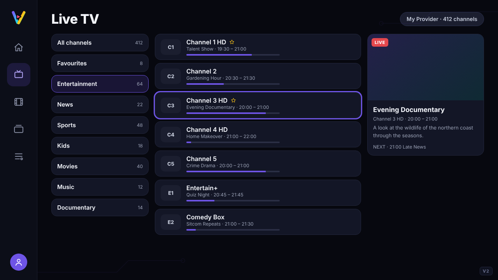
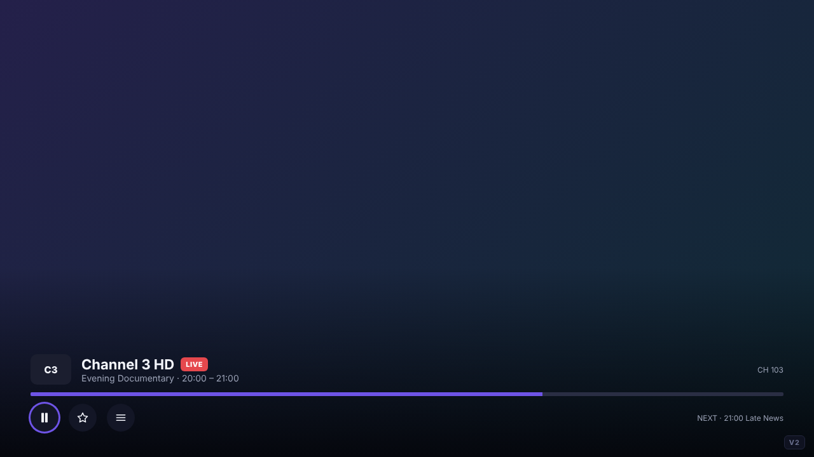
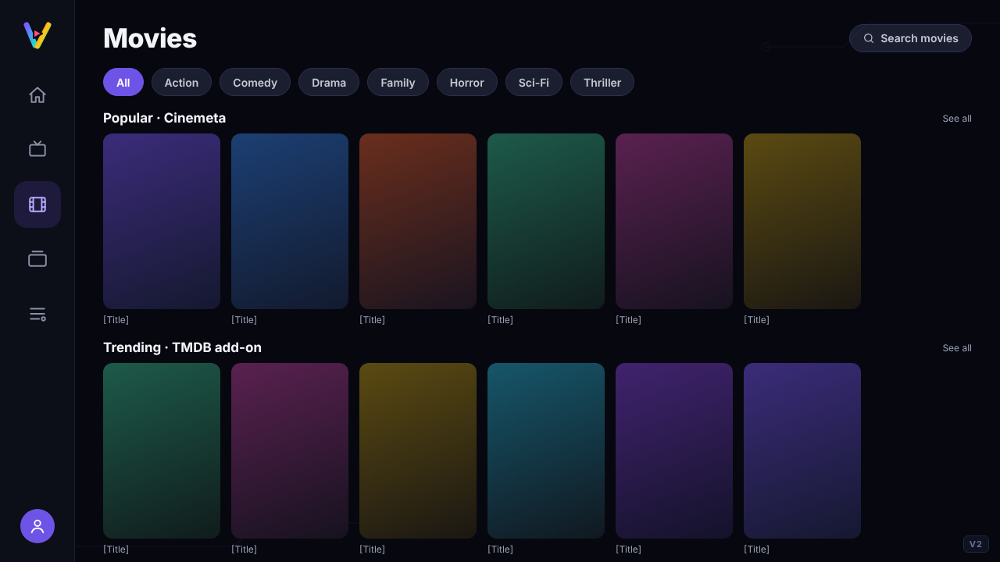
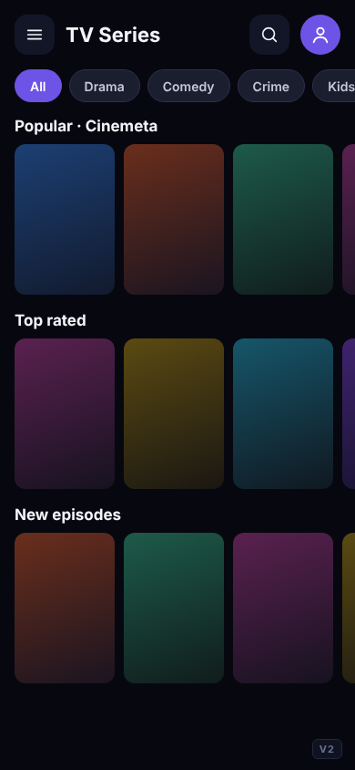
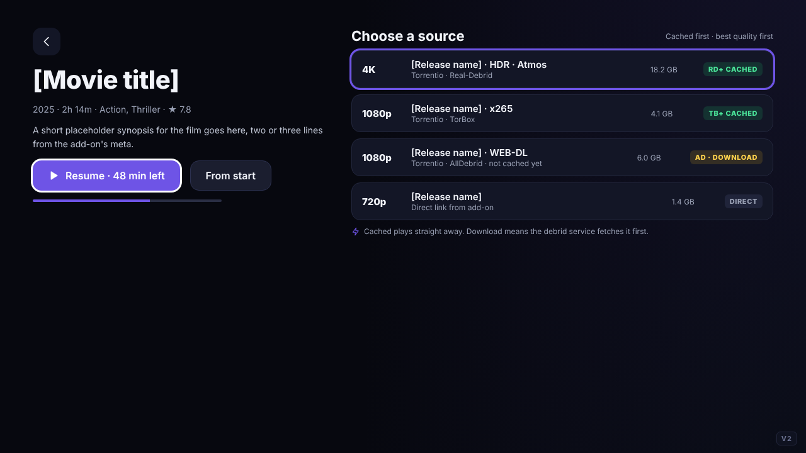
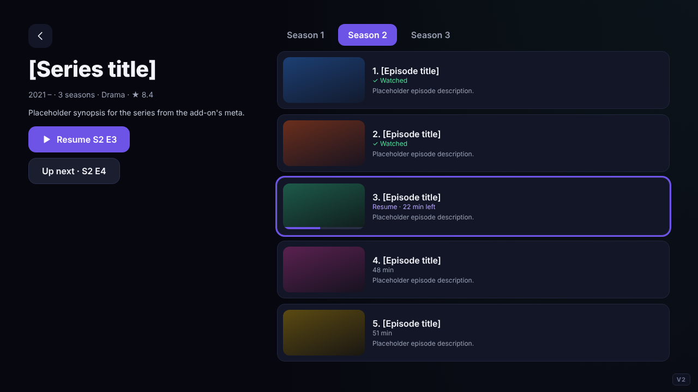
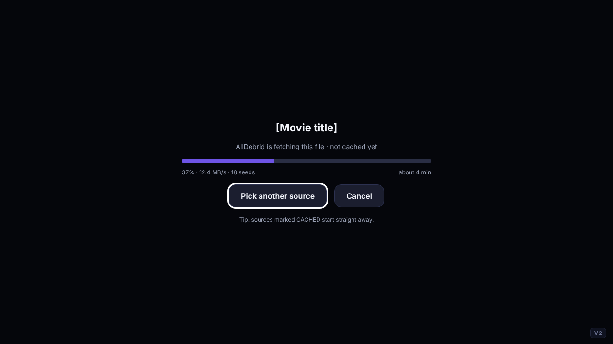
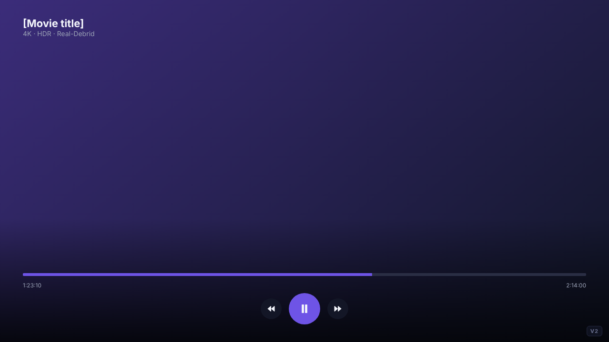

VantaView
Design mockups for the VantaView IPTV & VOD app for Android phones, tablets, Android TV and Fire TV. Select any screen to open it at full size. Names, titles and channels shown are placeholders.
V2 mockups
The current look: one solid violet accent instead of the rainbow gradient. The logo keeps its colours.
V2 · Start-up & profiles In the test build
V2 · Home In the test build
V2 · Live TV, Movies, Series & Player In the test build

Live TV channels – TV
Live TV player – TV
Movies from add-ons – TV
TV Series from add-ons – Phone
Movie details with sources – TV
Series details with episodes – TV
Player · debrid preparing – TV
Movie player – TVV2 · Sources: playlists, add-ons & debrid In the test build
V2 · Pages not built yet Planned, designed in the V2 style
V1 mockups
The original signed-off designs, kept for reference.
Home
Live TV & EPG
Sports
Movies
TV Series
Movie details
Series details
Library
Player
Settings
Add Playlist
Profiles
Search, Terms, Splash & Drawer
Reddit additions
Catch-up (TV)Catch-up (Phone)Live TV guide · past programme and full description (TV)Player · channel up/down on the remote (TV)Movies · info on focus (TV, same for TV Series)Sports · My teams and leagues (TV)Sports · Follow teams (Phone)Home · weather by the clock and 5-day forecast (TV)Settings · Sync watch progress with Trakt (TV)Add Playlist · Jellyfin server, after launch (TV)